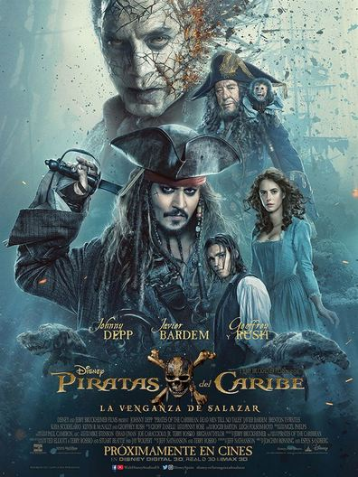
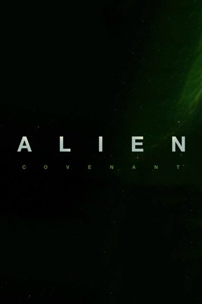
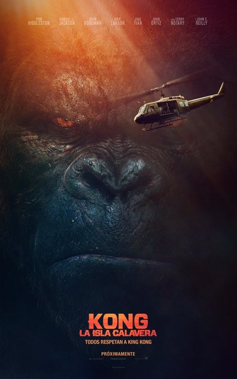
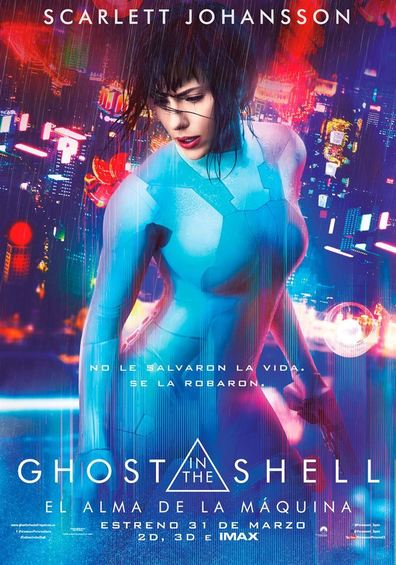
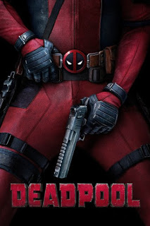

 - Genero:Aventura
- Puntaje:6
- Duracion:129 min
Empujado hacia una nueva aventura, un sumamente desafortunado Jack Sparrow descubre que los vientos de los malos augurios soplan incluso mas fuerte cuando los mortales piratas fantasma liderados por su viejo enemigo, el capitan Salazar, escapan del Triangulo del Diablo. Decididos a matar a todo pirata que encuentren en el mar, incluso al propio Sparrow. La unica esperanza de supervivencia del Capitan Jack Sparrow se encuentra en la busqueda del legendario tridente de Poseidon, un poderoso artefacto que otorga a su poseedor el control total sobre los mares.
 - Genero:Terror Accion
- Puntaje:5
- Duracion:124 min
La expedicion de Prometheus dejo un gran resultado, o mas bien, consecuencia, con el sintetico David como unico superviviente, que sera encontrado por la expedicion Covenant, que a pesar de estar seguros de haber encontrado el nuevo mundo en el espacio, en realidad solo llegaron a lo que de seguro puede significar la extincion total de su raza. Esta pelicula es la segunda de la trilogia que sirve de precuela a las ya conocidas historias de Alien, donde esta raza extremadamente letal y sigilosa llego a nuestro planeta para devorarnos literalmente y a la postre desatar la conocida guerra espacial que tuvo lugar en las peliculas de hace ya unos años.
 - Genero:Accion Aventura
- Puntaje:6
- Duracion:118 min
Ahora, es el hijo de Denham el que se convierte en protagonista de la historia, al hacer un nuevo e importante descubrimiento que le lleva al lugar donde su padre comenzo su gran aventura: Skull Island. Alli, el investigador lucha por encontrar las respuestas que aclararian el gran misterio del siglo e, incluso, del milagro mas increible de la historia de la humanidad.
 - Genero:Accion Drama
- Puntaje:7
- Duracion:106 min
Nueva version de la pelicula del 1995, que nos situa en un Japon del futuro. Alli, nos encontramos con una ciborg atormentada por dudas existenciales. Su principal duda se centra en el ghost, es decir, el elemento que define aquello que conocemos como conciencia o alma. Cree que solamente sabiendo con exactitud que es el ghost podra ser capaz de darle sentido a su propia existencia.
 - Genero:Accion Aventura
- Puntaje:8
- Duracion:112 min
Los heroes siempre son personajes fuertes, decididos, valientes y con metas de libertad y heroicidad muy claras, bueno, casi siempre. El caso de Deadpool sera algo distinto y es que en un concepto de anti heroe, este personaje que en los comics llego a matar al propio Stan Lee se muestra en su pelicula y revela como obtuvo sus poderes, el dificil proceso de adaptacion y ademas sus problemas con la justicia y las buenas obras. En una mezcla de peleas, bajo presupuesto y debates entre hacer el bien o burlarse de un taxista que se hace su amigo, podras divertirte con los poderes de este personaje, ademas de sus ocurrencias.